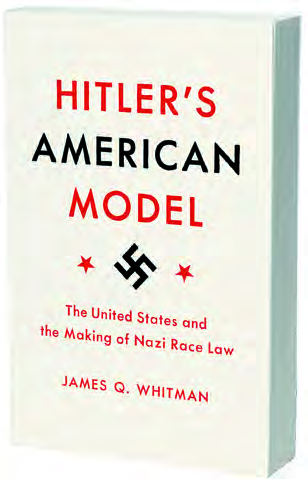
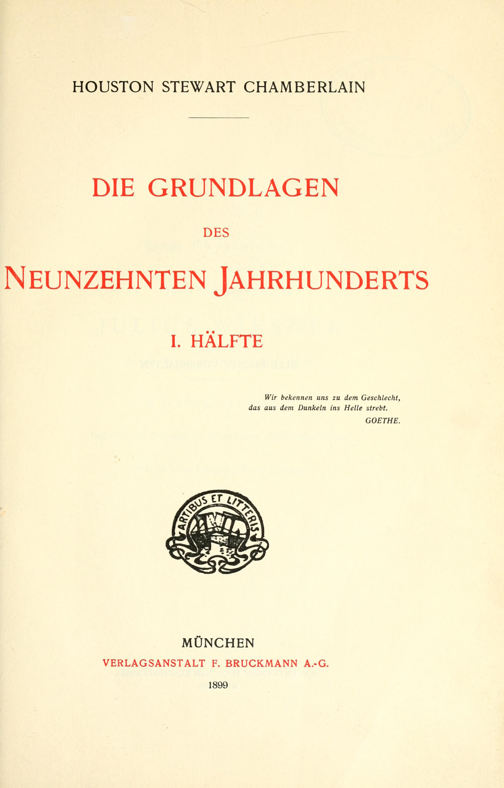

21:40 · 6 OPERE
Per un profilo psicologico dell'antisemita di sinistra.
Il filo del discorso
Dr Divago propone un’interpretazione dell’antisemitismo come costruzione di un nemico immaginario sul quale scaricare conflitti e ostilità. Il testo mette in discussione la possibilità di riconoscere questo pregiudizio soltanto dall’appartenenza sociale o politica e concentra la polemica sulla sua possibile espressione a sinistra. La lettura di Muravchik introduce il tema della trasformazione simbolica di Israele da vittima a aggressore; le false accuse rituali e l’incipit del Processo diventano esempi, rispettivamente storico e letterario, dell’accusa svincolata dai fatti.
Leggi la sintesi completaRiduci la sintesi
Nella seconda parte il relatore passa al razzismo negli Stati Uniti e al libro di Whitman sulle fonti americane della legislazione nazista, quindi al boicottaggio del Salone del Libro di Torino del 2008. Un esperimento sulle scelte ipotetiche fra persone e animali prepara la conclusione: l’attaccamento a ciò che si considera proprio può restringere l’empatia, come illustra la dipendenza di Gollum dall’Anello. Le ipotesi sulle motivazioni inconsce e le valutazioni del conflitto israelo-palestinese appartengono al relatore; non sono diagnosi né una verifica delle singole politiche citate.
I libri nel discorso

Making David into Goliath. How the World Turned Against Israel
Note sul riferimento
Copertina: Encounter Books · 2014 · inglese · edizione rilegata
Immagine autentica dell’opera, controllata visivamente; non identifica l’edizione usata nel video.
Joshua Muravchik e Making David into Goliath sono nominati con il sottotitolo sul mutamento dell’opinione verso Israele.

Il processo
Note sul riferimento
Copertina: Adelphi · gli Adelphi, 2020 · edizione di riferimento
Franz Kafka, Il processo e l’incipit sull’arresto di Josef K. espliciti.

Hitler’s American Model. The United States and the Making of Nazi Race Law
Note sul riferimento
Copertina: Princeton University Press; fotografia editoriale nel catalogo autunno 2018.
Fotografia autentica estratta dall’immagine incorporata nel catalogo ufficiale, pagina PDF 84, pagina stampata 82. Il catalogo distingue il cartonato 2017 ISBN 9780691172422 e il tascabile con nuova prefazione 2018 ISBN 9780691183060; non si assegna alla sola fotografia una tiratura o un ISBN non leggibile. Conversione tecnica JP2 CMYK/PNG RGB senza ricostruzione della copertina. Edizione usata nel video non accertata.
James Q. Whitman e Hitler’s American Model nominati; viene riferita la tesi sull’influenza della legge razziale americana.

I Protocolli dei savi di Sion (falso antisemita)
Note sul riferimento
Copertina storica di un falso antisemita: The Jewish Peril · Londra, Eyre & Spottiswoode · 1920
Fotografia museale della copertina dell’edizione inglese del 1920, conservata dall’USHMM. È mostrata come documento storico di propaganda, senza attribuire questa edizione al video o avallare le sue falsificazioni.
I Protocolli degli anziani di Sion sono esplicitamente richiamati come costruzione antisemita.

Die Grundlagen des neunzehnten Jahrhunderts
Note sul riferimento
Frontespizio del volume I: München, F. Bruckmann A.-G., 1899; frontespizio del primo volume.
Frontespizio autentico del volume I (I. Hälfte), scansione della Robarts Library, University of Toronto, pagina n8 del visualizzatore Internet Archive. Titolo, autore, editore e anno 1899 leggibili. Non è una copertina esterna né rappresenta il secondo volume. Presenza nel repertorio a scopo storico e critico, senza avallo delle teorie razziste.
Houston Stewart Chamberlain e il titolo tedesco Die Grundlagen des neunzehnten Jahrhunderts sono riconoscibili nonostante la resa nella trascrizione automatica.
Il Signore degli Anelli
Note sul riferimento
Copertina: Bompiani, 2020 · edizione illustrata da Alan Lee
Edizione illustrata da Alan Lee, traduzione di Ottavio Fatica. Nessuna edizione attribuita al video.
Gollum, l’Anello e Il Signore degli Anelli nominati nella conclusione.